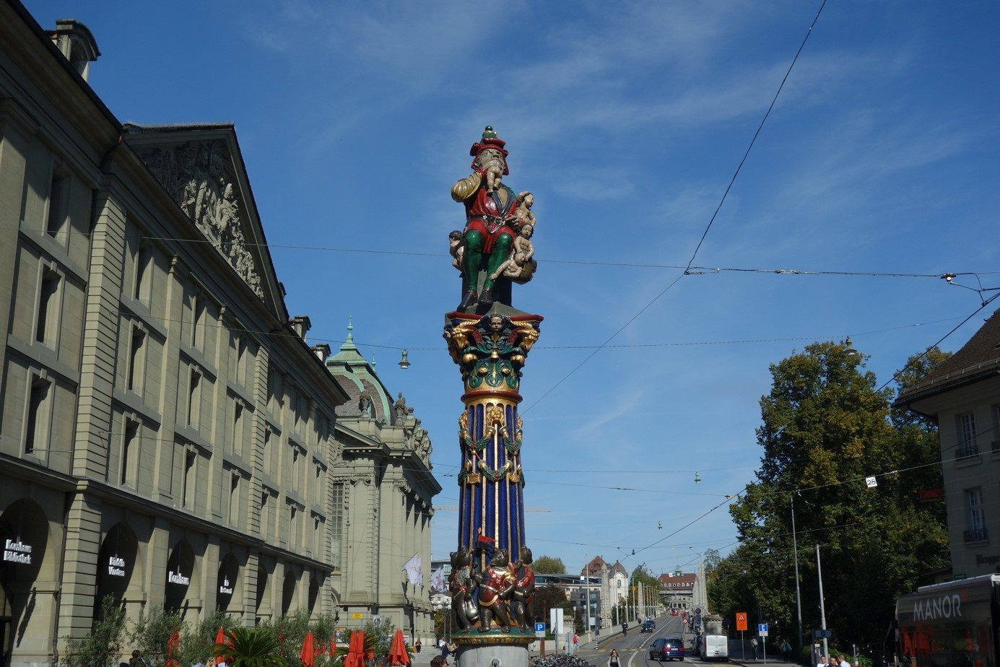
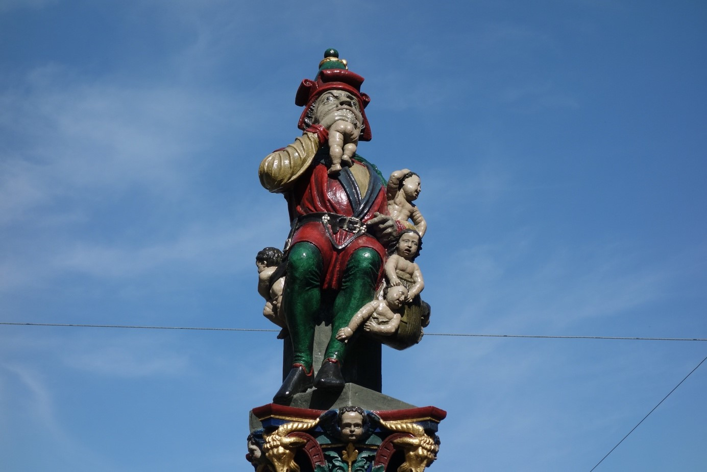
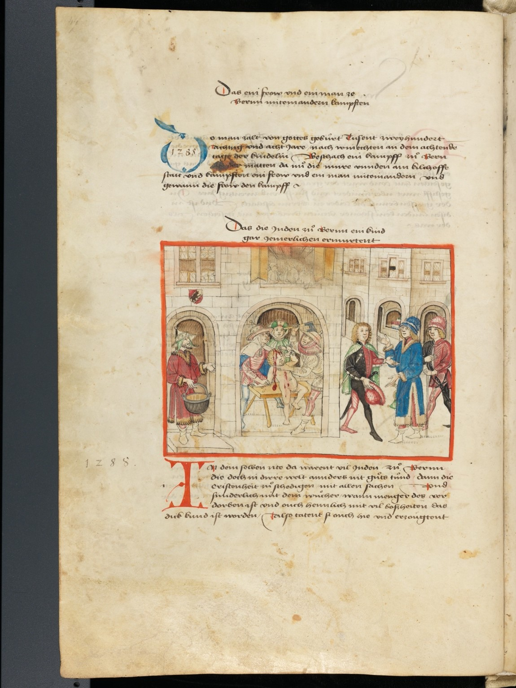
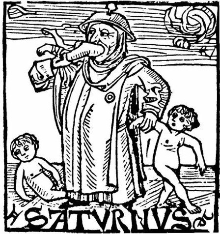

Es ist eine schreckliche Familie, die im griechischen Weltentstehungsmythos am Anfang steht. Uranos wird von seinem Sohn Kronos entmannt. Und Kronos verschlingt jedes Kind, das seine Frau Rheia zur Welt bringt. Letztlich geht es in jenem Mythos darum, wie allmählich Ordnung in die Welt kam. Für sich genommen schildert er aber auch den Albtraum einer verkehrten Welt, in der Geschöpfe, die gerade erst geboren worden sind, getötet werden. In Bern kann man diesen Albtraum am Kornhausplatz nachlesen. Dort befindet sich der Kindlifresserbrunnen: Ein sprechender Name, der den Deminutiv des schutzlosen Kleinkinds mit unzivilisiertem Fressen zusammenprallen lässt und der in Spannung zur menschlichen Lebensquelle des Wassers, des Brunnens, steht. Man hat den Kindlifresserbrunnen immer mal wieder als antisemitisches Motiv verstanden. Der Brunnen würde möglicherweise einen Ritualmordvorwurf aus dem 13. Jahrhundert thematisieren, der in Bern mithin zur Verbannung der Juden geführt hat. Das Thema sorgte unlängst erneut für Schlagzeilen. Mit viel Verve wird die Frage diskutiert, ob die Brunnenfigur mit dem Hut, der an einen Judenhut, den pileus cornutus, erinnern mag, einen Juden darstellen könnte. Die Diskussion wurde besonders heftig in den 1990er Jahren diskutiert (auch im Berner Stadtrat), als die Rolle der Schweiz im Zweiten Weltkrieg im Kontext der sogenannten nachrichtenlosen Vermögen aufgearbeitet wurde, und unlängst im Zusammenhang mit der «Black Lives Matter»-Bewegung, in einer Zeit von zunehmendem Rassismus und Antisemitismus. Die Debatte über den Kindlifresserbrunnen ist – unabhängig von seinen ursprünglichen Intentionen – vor allem auch ein Spiegel der Gesellschaft.
Kindlifresserbrunnen am Kornhausplatz in Bern, von Hans Gieng 1545. (Bild: Adriana Basso Schaub)
Ritualmordvorwürfe seit der Antike
Der Vorwurf, Juden würden Ritualmorde begehen, ist schon vorchristlich. Flavius Josephus (ca. 37/38–100 n. Chr.) ist der erste Beleg. Josephus berichtet, der Homergrammatiker Apion (gest. um 45/48 n. Chr.) habe behauptet, dass die Juden ein «unsagbar schauerliches Gesetz» kennten, das daraus bestehen würde, Jahr für Jahr zu einer bestimmten Zeit,
einen griechischen Reisenden zu ergreifen, ihn ein Jahr lang zu mästen, ihn dann in einen Wald hinauszuführen und schliesslich diesen Menschen zu töten, seinen Leib zu opfern nach ihren Riten, von seinen Eingeweiden zu kosten und einen Eid zu leisten bei der Opferung des Griechen, Feindschaft mit den Griechen zu halten; dann würden sie die Reste des umgekommenen Menschen in irgendeine Grube werfen. (Contra Apionem 2,95, Übersetzung F. Siegert)
Insgesamt aber waren Juden in der vorchristlichen griechisch-römischen Antike nur selten ein Thema. In der archaischen und klassischen griechischen Literatur werden sie nirgends erwähnt. Mit dem Aufkommen des Christentums und dann auch im Übergang von Antike zu Mittelalter kommt es im Diskurs über die Juden zu einem allmählichen Paradigmenwechsel. Die Juden sind nun für die Christen von fundamentaler theologischer Relevanz. Das lässt sich leicht auch nur schon statistisch anhand der Häufigkeit der Wörter «Juden» und «jüdisch» in der antiken christlichen Literatur im Vergleich zu vorchristlicher belegen. Nun ist wichtig festzuhalten, dass die Geschichte von Juden und Christen, Jüdinnen und Christinnen, im Mittelalter nicht nur eine von Feindseligkeiten, Polemiken und Gewalt geprägte ist. Es gab auch intensiven Austausch, gegenseitige Beeinflussungen, teils gar Hochschätzung. Und es gab auch heftige antichristliche Polemik von jüdischer Seite. Allerdings gilt es stets die Machtverhältnisse im Auge zu behalten. Die sogenannten «Toledot Jeschu», eine hebräische Veräppelung von Jesus’ Geburtsgeschichte, ist eine vor allem nach innen gerichtete Neuschreibung, verfasst aus der Perspektive der jüdischen Minderheit vor dem Hintergrund jahrzehntelanger Anfeindungen. Diese christlichen Anfeindungen gehen in Spätantike und Mittelalter weit über den Spott der Griechen und Römer hinaus. Man kann den Unterschied am christlichen Historiographen Sulpicius Severus (ca. 363–420 n. Chr.) festmachen. Im Zusammenhang mit der Zerstörung des Jerusalemer Tempels schreibt er in seiner Weltgeschichte, der Historia sacra:
So wurde nach dem göttlichen Willen, als der Geist aller entzündet war, der Tempel vor dreihunderteinunddreissig Jahren niedergerissen. Und diese letzte Zerstörung des Tempels und die endgültige Gefangenschaft der Juden, in Folge derer sie als aus ihrem Heimatland Verbannte und über den Erdkreis Verstreute wahrgenommen werden, legen der Welt täglich ein Zeugnis ab, dass sie wegen nichts anderem bestraft wurden als dafür, dass sie ihre gottlosen Hände an Christus gelegt haben (Historia sacra 2.30.8.).
In der antijüdischen Polemik des Christen Sulpicius Severus steht mehr auf dem Spiel als in der vorchristlichen Antike. Der entscheidende Unterschied lässt sich an einem Wort festmachen: «täglich». Für christliche Autoren wie Sulpicius Severus oder zuvor schon Tertullian (um 160–240 n. Chr.) waren die Juden nun von fundamentaler, theologischer, gleichsam täglicher Relevanz. An der Stelle aus Sulpicius Severus’ Chronik legen die Juden – nach der endgültigen Zerstörung Jerusalems für immer verbannt – fortwährend Zeugnis ab für ihr Verfehlen.
Kindlifresserbrunnen am Kornhausplatz in Bern, von Hans Gieng 1545. (Bild: Adriana Basso Schaub)
Der Ritualmordvorwurf in Bern
Die Juden als Gottesleugner und Jesus-Verächter ist ein Motiv, das wir auch in Bern wiederfinden. Der Berner Chronist Konrad Justinger (ca. 1370–1438 n. Chr.) beschreibt in der ersten Hälfte des 15. Jahrhunderts die Juden als jene, die Jesus und Maria verfluchen. Der Ritualmordvorwurf wird auf Schweizer Boden zum Ende des 13. Jahrhunderts zum ersten Mal in Bern erhoben: Berner Juden hätten den christlichen Knaben Rudolf ermordet. Die angeblichen Mörder werden hingerichtet und den Juden wird das Bleiberecht entzogen (und mit ihnen die Schulden, die die Christen bei ihnen in finanziell schwierigen Zeiten der Stadt hatten). Der Berner Pfarrer und Chronist Karl Howald (1796–1869) hatte 1847 vermutet, der Brunnen würde den angeblichen Ritualmord aus dem 13. Jahrhundert thematisieren. Aber das scheint sehr unwahrscheinlich (Howald nahm den Ritualmordvorwurf übrigens für bare Münze). Darüber, ob es sich beim Mann, der gerade ein Kind verschlingt, während die nächsten drei entsetzt und verängstigt ihrem Schicksal entgegen schauen, um einen Juden handelt, wurde immer wieder mal heftig debattiert. Was der Erbauer der Figur, Hans Gieng (gest. 1562), mit der Figur des Kindlifressers beabsichtigte, wissen wir nicht. Das Thema wird häufig emotional angegangen und rasch mal frei von Nuancen entschieden. Und so ist die Figur «sicher aber kein Kinder mordernder Jude» (so Berchtold Weber, im Historisch-Topographischen Lexikon der Stadt Bern) oder «ein Jude mit dem typischen, nach oben verlaufenden Spitzhut» (so Roy Oppenheim jüngst in einem Zeitungsartikel).
Angeblicher Ritualmord am Knaben Rudolf (Ruf). Amtliche Berner Chronik des Diebold Schilling, 1483 Bern, Burgerbibliothek, Mss.h.h.I.1, p. 44. (Bild: Codices Electronici AG, www.e-codices.ch)
Zielführender als die Suche nach den Absichten des Künstlers ist möglicherweise eine andere Frage: Konnte die Figur des Berner Kindlifressers im 16. Jahrhundert als Jude verstanden werden? Auch wenn die Figur allenfalls vom Künstler nicht als Jude, sondern als Fasnachtsfigur oder als böser Knecht Ruprecht konzipiert gewesen sein sollte, stellt sich die Frage, ob sich nicht dennoch eine Deutung aufdrängen konnte, die den Kinderfresser als Juden interpretierte.
Saturn und die Juden
Ich bin ausgegangen vom Mythos des Kronos, des römischen Saturn, der seine Kinder verschlingt. Der Kindlifresser wurde oftmals auch als Saturn interpretiert. Und Saturn wurde wiederum immer wieder mal mit den Juden in Verbindung gebracht. Die Verbindung ist erneut alt, schon vorchristlich. Im Mittelalter und nun näher bei unserem Kindlifresserbrunnen konnten sich, wie Eric Zafran aufzeigte, Vorstellungen von Saturn und dem Juden überlagern. In einem Holzschnitt aus einem Almanach aus dem Jahr 1492 des Nürnberger Druckers Peter Wagner wird Saturn als kinderfressender Kronos dargestellt. Er trägt einen Hut, den man als Judenhut verstehen kann. Eindeutig als Jude identifizierbar ist dieser Saturn/Kronos durch den Judenring, den er auf der linken Brust angeheftet hat. Der Menschenfresser Saturn ist hier jüdisch, der Jude saturnisch. Der Ritualmordvorwurf an die Juden war im Mittelalter (und darüber hinaus) weit verbreitet. Das Bild eines Mannes, der kleine Kinder verschlingt – wie es auf dem Berner Kindlifresserbrunnen dargestellt ist – konnte leicht mit diesem antijüdischen Stereotyp konnotiert werden. Ob dies mit der Intention des Künstlers übereinstimmte oder nicht.
Saturn, Holzschnitt aus einem Almanach des Druckers Peter Wagner, 1492.
Dr. René Bloch ist Professor für Judaistik am Institut für Judaistik und am Institut für Klassische Philologie an der Universität in Bern.
Weitere Artikel von {{ author.author }} finden Sie hier:
Zur Vertiefung:
- Schwinges,Rainer C.: «Zwischen Privileg und Gewalt. Juden in Bern, 1200-1800», in: Bloch, René / Picard, Jacques (Hgg.): Wie über Wolken. Jüdische Lebens- und Denkwelten in Stadt und Region Bern, 1200-1900, Zürich 2014, 21-59.
- Zafran, Eric: «Saturn and the Jews», in: Journal of the Warburg and Courtauld Institutes 42 (1979) 16-27.